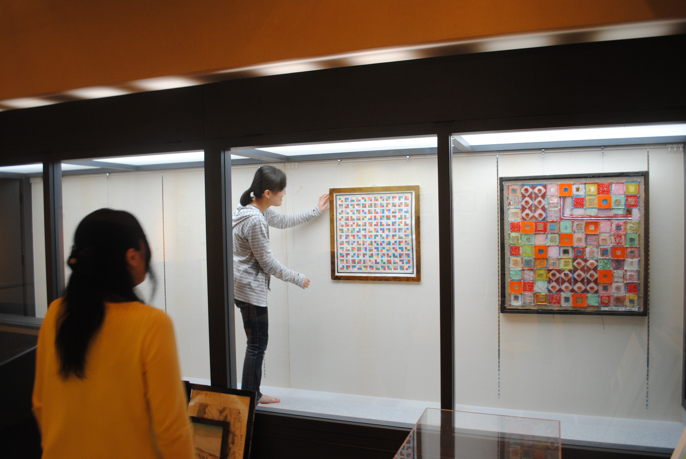

博物館の陰の主役 学芸員
学芸員は、博物館の展示や資料の管理、運営を行う博物館の柱となる仕事です。
本学では、所定の単位を修得し、「博物館実習」を受講することで、学芸員の資格を取得できます。
学芸員課程を修了し、博物館や文化財専門職の採用試験に合格した卒業生が、県内・県外の博物館や各県・市町村の教育委員会等の文化財に携わる仕事で活躍しています。
学芸員課程では、学内で基礎的技術を習得する「博物館実習１」（3年次）と、現場で実践を学ぶ「博物館実習２」（4年次）が開講されています。
博物館実習２は、県内の博物館や美術館で実習を受け入れていただいています。
学内にも博物館があり、学内で博物館実習２を受講することも可能です。
パネルや案内ポスターなどを作成する専用のパソコンやグラフィックソフトを用意し、博物館の展示活動に求められる実践的なスキルを身につけることができます。
鹿児島国際大学博物館実習施設「鹿児島国際大学ミュージアム」については、ホームページをご覧ください。
鹿児島国際大学ミュージアム

学芸員資格課程の授業科目や内容の詳細については、履修要項をご確認ください。
履修要項（大学情報）
top